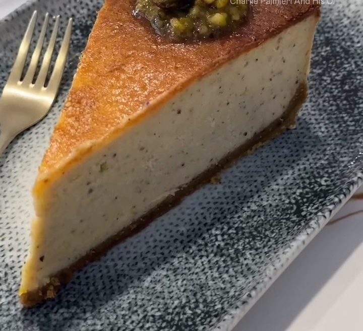
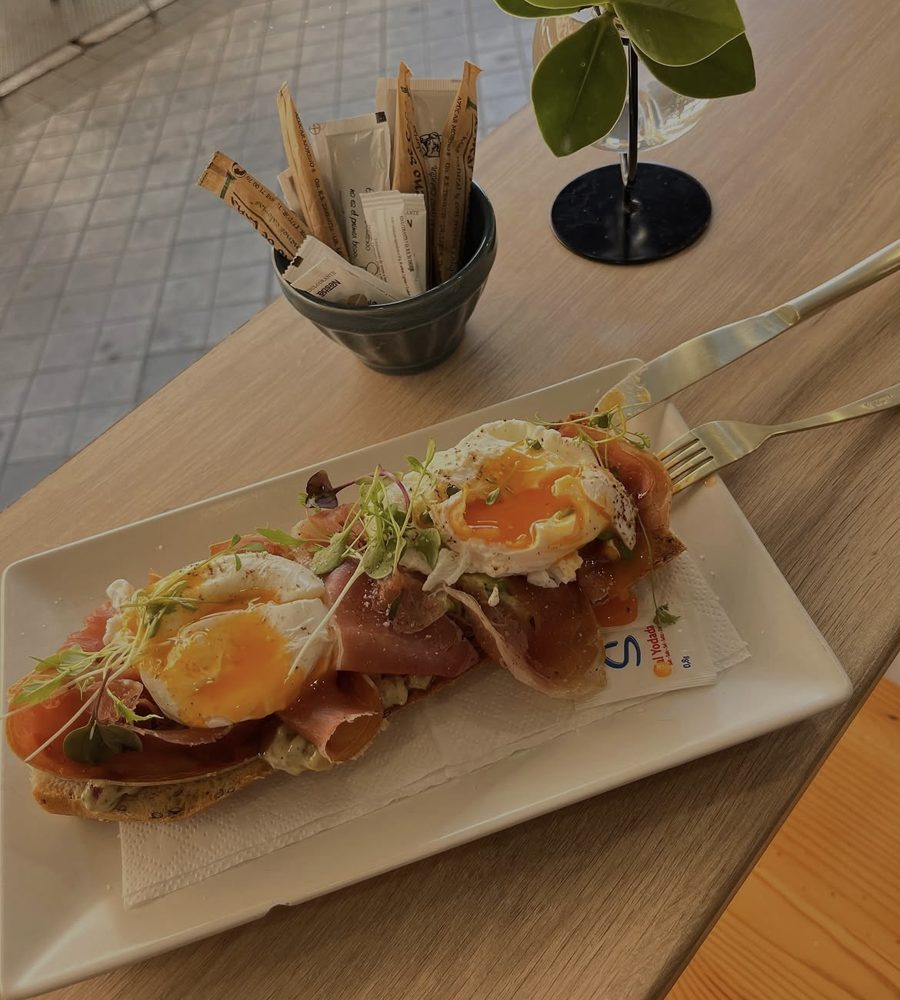
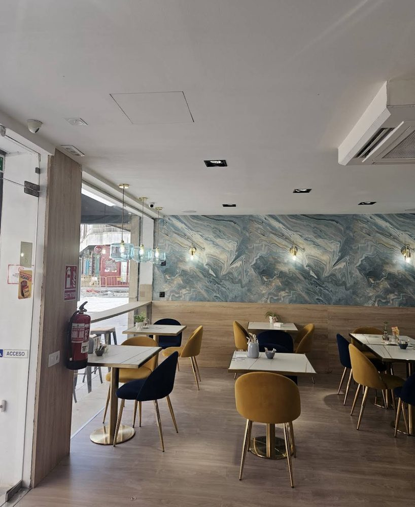
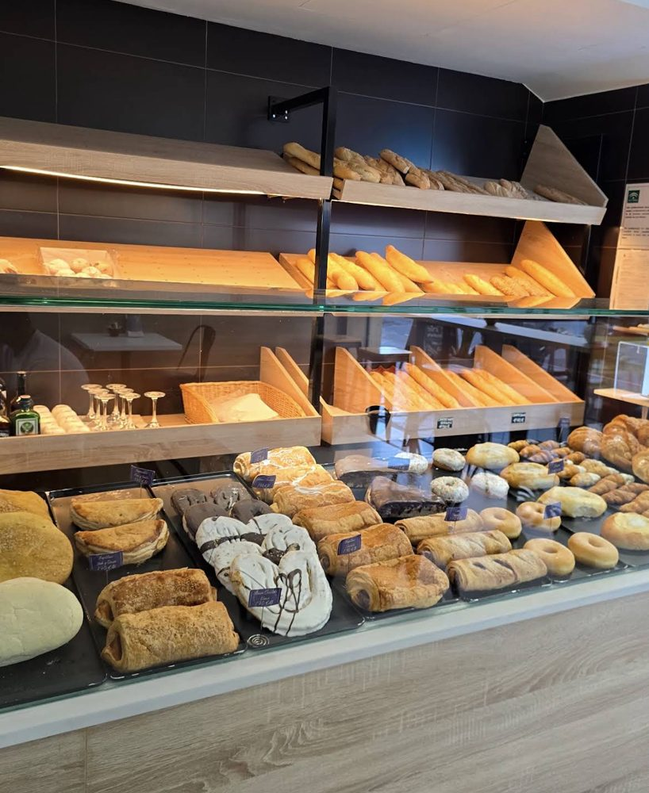
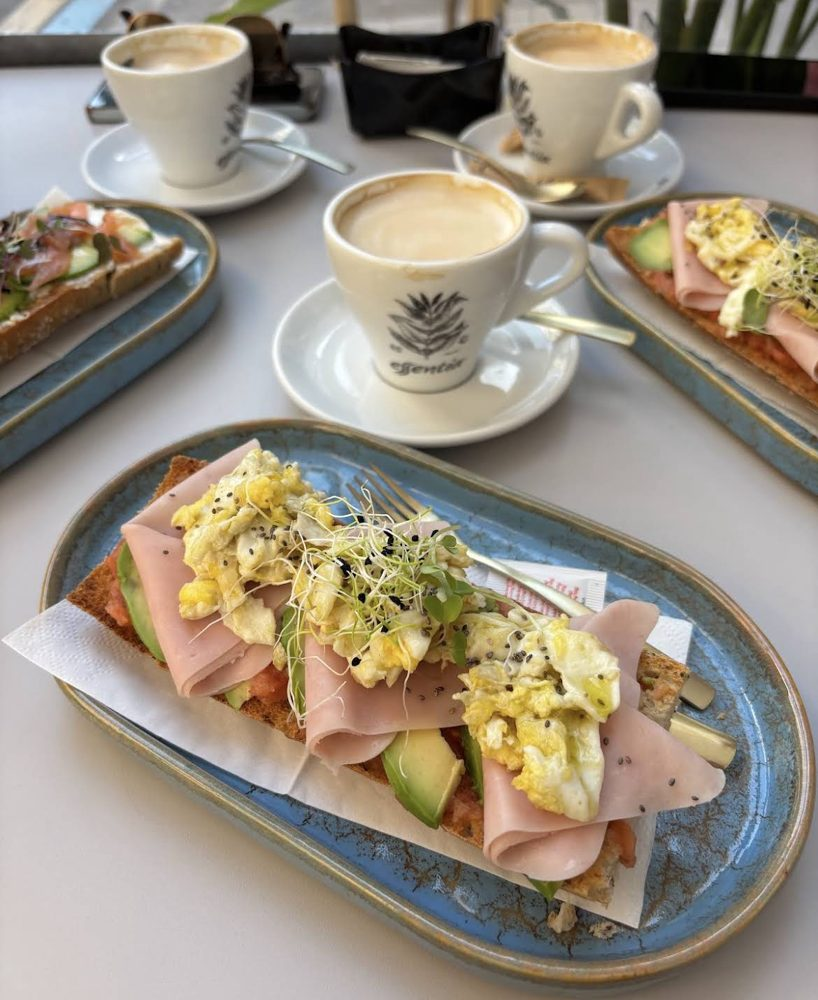
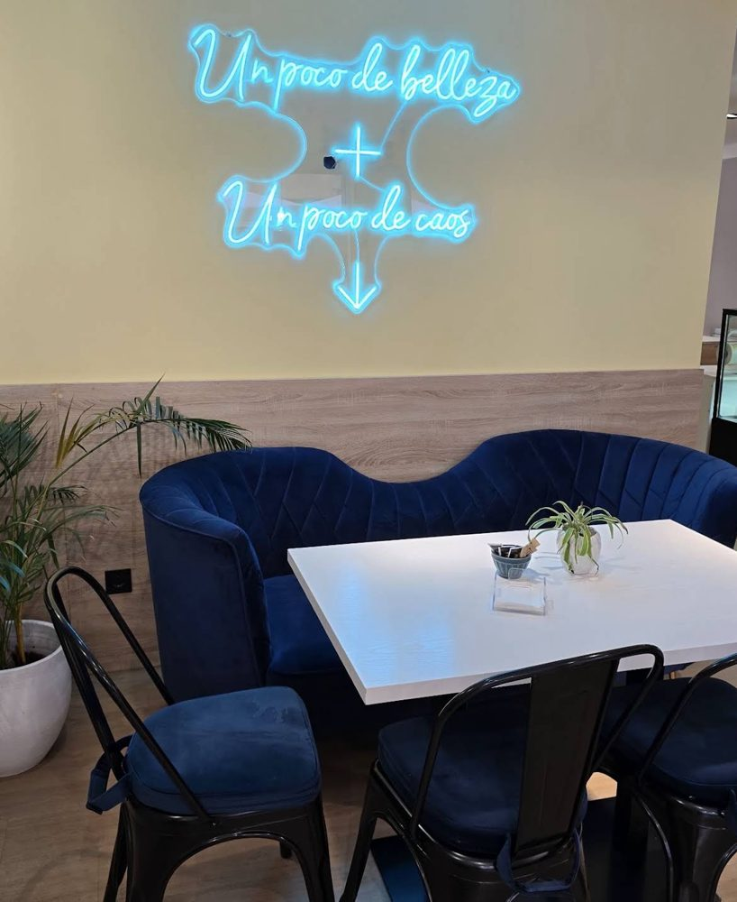
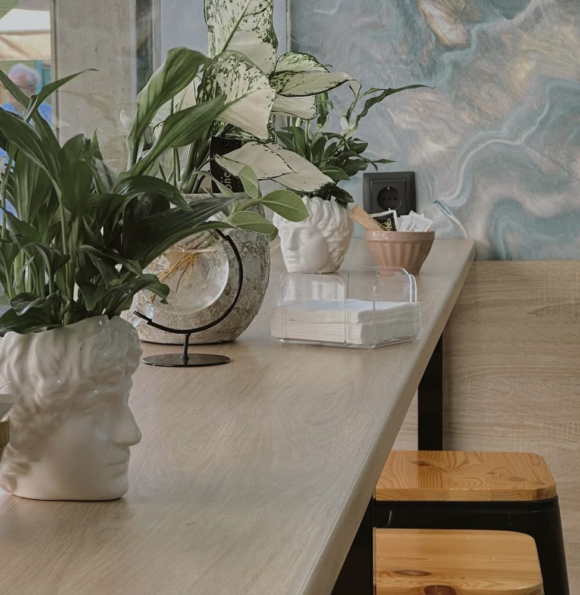

Café de especialidad
Espresso, latte, americano o matcha, preparados con mimo en cada taza.
Café de especialidad · Granada
Un poco de belleza
+ un poco de caos
Un sitio tranquilo para empezar el día con buen café, pan recién hecho y tostadas que no se quedan cortas.
Espresso, latte, americano o matcha, preparados con mimo en cada taza.
Pan, bollería, brownies y tartas que hacemos nosotros cada día.
De la primera tostada de la mañana al dulce de media tarde.
Dos mini cruasanes de mantequilla.
De chocolate con nueces, o de chocolate blanco con pistachos.
Pavo, tomate, huevo revuelto y aguacate.
Salmón, Philadelphia, aguacate y balsámico.
Jamón serrano, aguacate mix y huevo poché.
Queso cottage, aguacate, miel y arándanos.
Tostadas en pan multicereales · precio media / entera.
¿Buscas otra cosa? Pregúntanos, tenemos más opciones en el local.

Cumpleaños, celebraciones o simplemente porque sí. Hacemos tartas personalizadas a tu gusto: dinos el sabor, el tamaño y la decoración.
Encargar por WhatsApp





958 09 76 47 · también por WhatsApp
Granada
Abrir en Google Maps